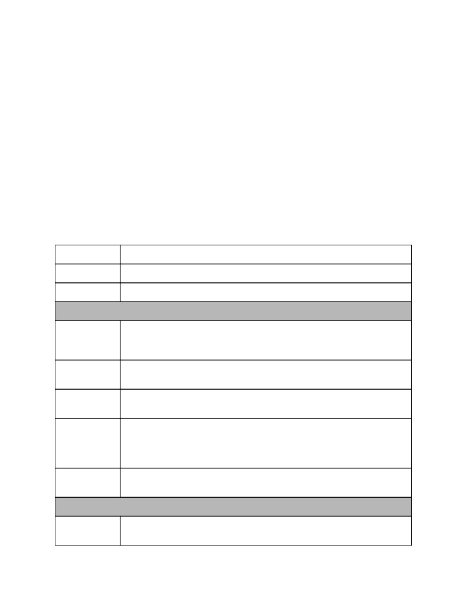
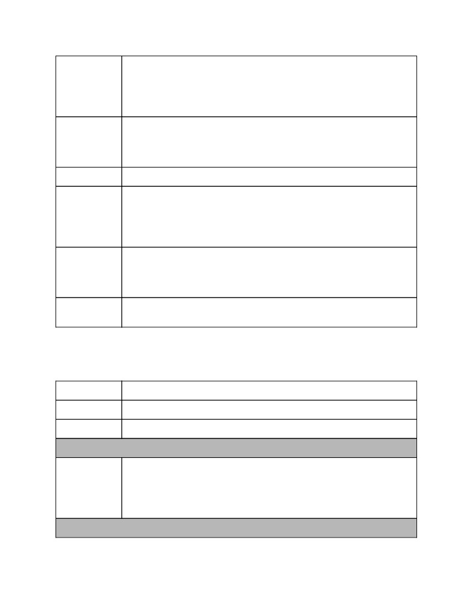
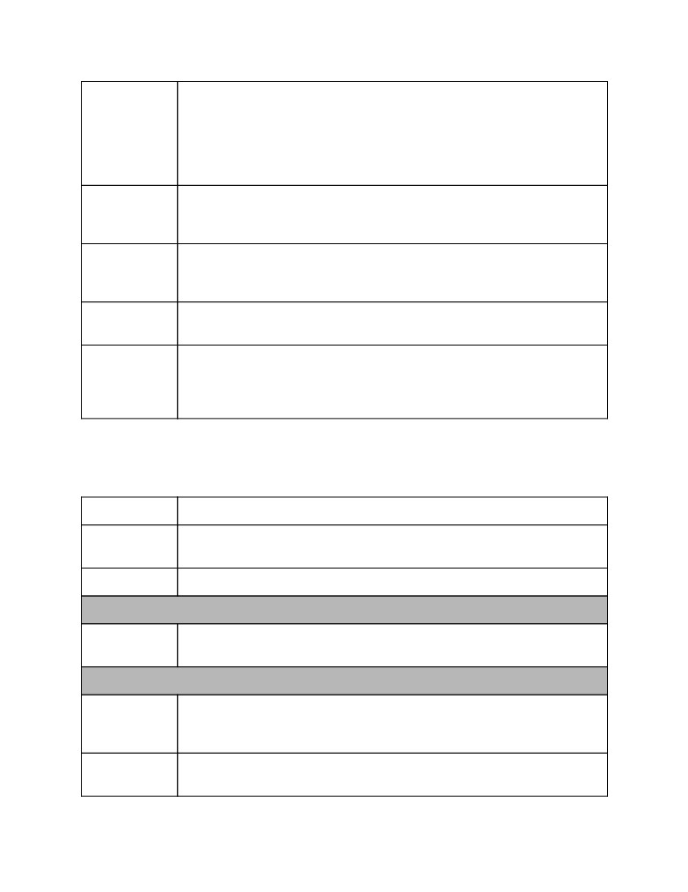

Virtual Conferences
A Guide to Best Practices
A community resource from the
ACM Presidential Task Force on
What Conferences Can Do to Replace Face-to-Face Meetings
Version 1.1 -- April 13, 2020
Abstract
“Our conference organizing committee just decided to switch our physical conference to
online. But the conference is supposed to start in three weeks, and none of us have ever
even been to a virtual conference, much less put one on! Where do we start???”
This document is a practical guide to the brave new world of virtual scientific conferences,
assembled and curated by members of the Association for Computing Machinery’s Presidential
Task Force on What Conferences Can Do to Replace Face-to-Face Meetings.
With so many conferences going online in a short time, there are many organizers with urgent
questions; at the same time, new insights, ideas, and experiences are being generated at a
furious rate. We hope that this guide will serve both as a basic orientation for newcomers and as
a repository of accumulated knowledge from the community.
As heavy users of online technologies and as researchers responsible for developing them, the
ACM community is especially well-positioned to offer advice that we hope will be helpful to other
groups dealing with the same problems.
How to read this guide: This document is intended to serve as a comprehensive resource for
understanding, organizing, and running virtual conferences.
● The Introduction sets the stage and identifies the context of this Guide.
● High-Level Planning describes a range of issues to be considered when planning a
virtual conference, based on prior experiences with these events.
VIRTUAL CONFERENCES: A GUIDE TO BEST PRACTICES
● Technology offers some concrete advice on hardware, internet connectivity, audio/visual
support, and specific communication platforms; it includes a large table comparing
available platforms.
● Nuts and Bolts discusses specific issues related to the different parts of a conference
(plenary and paper sessions, workshops, etc.) and offers concrete “bootstrap
suggestions” for how to put on conferences of various sizes.
● Fostering Social Interactions discusses what virtual conferences can do to replace the
informal, unstructured interactions that are the lifeblood of physical conferences.
● Other Resources contains a list of links to interesting documents related to moving
events online.
evolving collection of links to experience reports, as well as additional ideas that
organizers may want to experiment with.
If you want a quick start, you can jump straight to the Bootstrap Suggestions before exploring
the rest of the document.
How to contribute: Since it surveys a rapidly evolving topic, this guide is based on a live
Google document that is periodically versioned. We welcome contributions from readers!
● Organizers of past virtual conferences: please add links to your reports in the
● Organizers of upcoming virtual conferences: if you have questions that are not covered
in this document, you are welcome to leave comments in the live one .
● Experts in any relevant area: please give us your thoughts in the form of comments or
How to cite this document: We suggest that citations to any part of this Guide, including the
companion table and appendices, read as follows:
[ACM PTF RF2F 2020] ACM Presidential Task Force on What Conferences Can Do to
Replace Face to Face Meetings, “Virtual Conferences, A Guide to Best Practices”,
Organization of the Task Force
● Founding Documents: the original Proposal for the task force and its official Charter from
the ACM.
● Members:
former Treasurer of SIGPLAN, member of SIGPLAN ad-hoc committee on
Jeanna Matthews , Clarkson University, USA (Task Force Co-chair, member of ACM
Council, Former SGB Chair)
Benjamin Pierce , University of Pennsylvania, USA (Task Force Executive Editor,
Page 2
VIRTUAL CONFERENCES: A GUIDE TO BEST PRACTICES
Gary Olson , University of California, Irvine, USA (Former SIGCHI Treasurer; Chair
of CSCW Steering Committee, chaired CHI, CSCW, DIS, and many non-ACM
conferences)
Rob Lindeman , University of Canterbury, NZ (Chaired IEEE VR 2010)
● Ex-officio members:
Pat Ryan (ACM COO)
Donna Cappo (ACM Director of SIG Services)
Contributors (in alphabetical order):
Page 3
VIRTUAL CONFERENCES: A GUIDE TO BEST PRACTICES
Table of Contents
1 Introduction
5
2 High-Level Planning
6
2.1 Organizing Committee
6
2.2 Planning for Virtual Presence
8
2.3 Navigation
9
2.4 Dealing with Time Zones
10
2.5 Carving out Mental Space
10
2.6 Registration
11
2.7 Finances
12
2.8 Preparing to Deal With Disruption
13
2.9 Fairness and Inclusiveness
14
2.10 Accessibility
15
3 Technology
16
3.1 Conference Hosting
17
3.1.1 Specific Platforms and Tools
17
3.1.2 “On-Site” A/V and IT Support
18
3.2 Requirements for Participants
19
3.2.1 Hardware
19
3.2.2 Internet Connectivity
20
4 Nuts and Bolts
20
4.1 Supporting the Parts of a Conference
20
4.1.1 Program Committee Meeting
20
4.1.2 Plenary Sessions
21
4.1.3 Paper Sessions
21
4.1.4 Workshops, Doctoral Consortia, and Tutorial Sessions
22
4.1.5 Poster, Exhibitor, Birds of a Feather, and Demo Sessions
22
4.1.6 Speaker Preparation
23
4.1.7 Archival storage
23
4.2 Bootstrap Suggestions
23
4.2.1 Going Virtual with Low Overhead
24
4.2.2 Small Conference or Large Workshop
24
4.2.3 Medium-Size Conference
26
4.2.4 Large Conference
27
5 Fostering Social Interactions
27
6 Other Resources
29
Page 4
VIRTUAL CONFERENCES: A GUIDE TO BEST PRACTICES
1 Introduction
The spread of COVID-19 is causing disruption world-wide, forcing conference cancellations, and
leaving organizers scrambling for alternative ways of disseminating the work that was to be
presented. In response, the ACM has convened a Presidential Task Force (PTF) to rapidly
gather and disseminate best practices and immediately implementable options.
This guide is meant to shed light on the territory of online conferencing for those considering
offering some form of online participation for conferences that are being cancelled.1 Fortunately,
online conferences have been happening for a long time, mostly in niche communities outside
the ACM. The guidelines presented here are mainly derived from knowledge acquired from
those communities. However, since mid-March 2020, a few ACM conferences have rapidly
adopted some form of online participation. As those events happen, we are asking the
organizers to write up experience reports, which we will continually add to this document.
Accordingly, we expect the document to evolve as we learn more about what works.
In times of severe travel restrictions, such as the present one, conference organizers may opt to
forego synchronous meetings altogether and focus only on their asynchronous “outputs”—
published papers, pre-recorded videos, published software artifacts, and maybe even
asynchronous Q&A. (A good example of this model is explained in this document .) This is a
viable and very simple fallback option for conferences that cannot take place physically. But this
model eliminates what makes a conference a conference: the real-time social interaction among
participants. Eliminating this component, or replacing it with interactions with long temporal
intervals (e.g., text-based discussion forums), is, essentially, falling back to a publications-only
model. Moreover, preliminary evidence from ASPLOS 2020 shows that participants in these
alternative arrangements want live, interactive components.
We are writing for organizers of academic conferences who want to create online spaces for
real social interaction and networking and maintain some of the benefits of synchrony from their
formerly physical conferences. We should emphasize, however, that although we use the word
“virtual” throughout this guide as a synonym for “online,” we are not recommending that all
conferences attempt to reconstitute themselves in full-blown virtual reality, complete with 3D
scenery, virtual exhibit halls, avatars, and all the rest. There have been some heroic
experiments in this direction (e.g., the recent IEEE VR conference, and the long-running Open
Simulator conference), but the technological demands, for both organizers and participants, are
not for the faint of heart.
1 We focus on fully online conferences in this guide, since these are what people are trying to figure out
right now. Some hints and pointers on physical/virtual hybrids can be found in this appendix .
Page 5
VIRTUAL CONFERENCES: A GUIDE TO BEST PRACTICES
Over the past few years, there has been an increasing interest by many members of the ACM
community in ways to support remote participation in conferences, as well as ways to organize
online and mixed events. This increasing interest has been associated with community
awareness towards environmental sustainability and climate change, diversity, inclusion, and
economic justice . For these reasons, the ACM has convened a separate Task Force on Virtual
Conference Experience for analyzing more strategically the tradeoffs and broader impacts of
virtual conferences on the ACM community. Accordingly, this guide avoids these longer term
issues, and focuses entirely on the pragmatics of organizing virtual conferences right now,
describing immediately implementable options and experience-based best practices for those
who have already decided that they want to take their conference online.
2 High-Level Planning
One of the most important takeaways from past experiences with virtual conferences is that they
are not just about the technology that supports them, but they are, first and foremost, about
rethinking and retargeting the things that organizers and participants normally do into new
media and new forms of interaction. Virtual conferences need just as much people-power and
organization as physical conferences. The roles in organizing committees are pretty much the
same, but some of these roles will see their activities radically shifted from dealing with physical
matters to dealing with online matters; the planning topics and activities are also pretty much the
same, but shaped by the new media. This section covers these important shifts.
2.1 Organizing Committee
Virtual conferences are conferences. That is, they present a live, real-time program enacted and
observed by people, and they foster real-time social interaction among participants. A corollary
that may take organizers by surprise is that virtual conferences require as much planning and
behind-the-scenes real-time logistics as physical conferences; it is a mistake to assume that a
virtual conference will “just happen” if the organizers simply choose some real-time interaction
platform and tell people when and where to show up.
Virtual conferences require organizing committees quite similar to those of physical
conferences, including the need for volunteers during the conference, but with some significant
rethinking required for each of the roles:
●
“Local” Arrangements: The “venue” of a virtual conference is a platform, or a set of
platforms, where social interaction will take place. As such, the “local arrangements”
team will now need to include people with specialized technical skills, including
audio-visual and streaming expertise, who will be able to decide on, and interface with,
the platform(s) where the social interaction will take place. The local arrangements team
will also serve as, or interact with, the hosts of all the sessions.
Page 6
VIRTUAL CONFERENCES: A GUIDE TO BEST PRACTICES
●
Hosts are responsible for starting and managing the live sessions. Although they are the
owners of the sessions, they are typically hidden from everyone, except from those
participating in those sessions during the “green room” period of the sessions (a period
before the sessions start). They are the ones saying “3, 2, 1… live” and the ones with
super-powers. Hosts may be volunteers who are part of the local arrangements team or
they may be contracted professionals. More on this in the section on On-Site A/V
support.
●
Session Chairs: These are the moderators who make sessions of the conference work.
Although they can be the same group of people who serve as session chairs in physical
conferences (e.g., Program Committee members), they require additional advice and
training to make sessions successful. Their sessions may also be quite different from the
ones we are used to in academic physical conferences, as they may involve bringing in
pre-recorded videos and groups of speakers, instead of traditional technical talks.
○ Specifically, session chairs need to join the sessions at least 15 minutes before
they start, make sure all presenters are there and find them quickly if they aren’t,
introduce the session properly (“This is session so and so of conference X”),
gather questions from the audience in chat channels, keep the flow, and keep
track of time. In cases when live presenters go unreasonably longer than their
allotted time, session chairs can, and sometimes must, intervene, including by
muting the speakers, as there may be strict time limits for the use of the platform
or related to time zones.
○ In very small events, the role of session chair and host may be played by the
same person, but for conferences even as small as 100 participants, that is not a
good idea, as those roles require completely different skills.
●
Volunteers: A virtual conference needs at least as many volunteers as a physical
conference. Volunteers need to be present in each virtual meeting space, monitor the
chat channels, greet participants, staff reception areas and help users test their audio,
help train session chairs and speakers, help session chairs gather questions, and
interface with the rest of the organizing team when problems arise. They should be
easily identifiable through visual cues, naming conventions, etc. Roughly, there should
be one volunteer per meeting room and chat channel, plus a few in a “landing” or
reception space for newcomers, if there is such a thing. Just like in a physical
conference, volunteers will need to be trained in advance and someone needs to
oversee their activities during the conference.
●
Entertainment and Social Interaction: Some physical conferences include in their
organizing committees a group of volunteers whose task is to set up an entertainment
program that may include live music, outings, etc. This task is even more important in
virtual conferences. Someone in the organization should be in charge of adding things
for participants to do online together. (See Fostering Social Interactions below.)
We mostly concentrate on the organization of the conference itself. Some advice on virtual
program committee meetings can be found below.
Page 7
VIRTUAL CONFERENCES: A GUIDE TO BEST PRACTICES
Given that virtual conferences take place in online platforms, which will be new for most
participants, organizers cannot rely on speakers’ prior experiences on giving conference talks. It
is strongly advised that organizers set up training sessions ahead of time for speakers and
session chairs, so that they can learn how to function in the platform(s) where the conference is
taking place, and how to interact with people in other roles and with the audience. These
training sessions can be as short as 15 minutes. Training speakers and session chairs is a task
that can engage many student volunteers.
Another issue that organizers should keep in mind is that virtual conferences may be less
forgiving than physical ones if something is not working as planned, such as a microphone not
working, audio feedback, or the location of a workshop changing. Testing and rehearsing ahead
of time mitigates these problems.
2.2 Planning for Virtual Presence
In physical conferences, ‘presence’ means physical presence. In virtual conferences, the
participants’ physical presence is virtualized through media: video, audio, graphics, and text.
One might think that the way to organize a virtual conference is as one big shared space, where
everyone shares all their media streams with everyone else. However, this approach is both
technically challenging and not necessary for a successful meeting. Different parts of a virtual
conference require different media for different groups of participants.
For example, plenary sessions -- where everyone comes together -- have a clear separation
between those on stage (one or just a few people) and those in the audience (possibly a very
large group). Those on stage can be part of a smaller, media-rich shared space that is then
livecast to the larger audience -- or even publicly onto the Web. Livecasting is cheap and
efficient, and there are plenty of options to choose from.
Nevertheless, it is much more engaging when the audience itself also has a live presence; the
speakers on stage feel like they have an audience, and the people in the audience feel that they
are in a group, and not watching a video alone. Currently, one of the most effective ways to host
very large groups of people in a shared space is using text messaging. Therefore, independent
of what media is chosen for rendering the people ‘on stage,’ the glue that binds participants
together is text chat. There will need to be several group-chat channels, including all
simultaneous participants in the conference, session-related channels, and smaller, specialized
chat channels for smaller groups. This makes all the difference between a person watching a
video of a talk by themselves, and watching a talk together, at the same time, with a group of
like-minded people. It is important that the text chat feeds are monitored by an identified person
and that questions are fed into the live session as appropriate, and that feedback is given to the
speakers during live sessions, as they may not be able to monitor such feeds themselves while
giving their talks.
Page 8
VIRTUAL CONFERENCES: A GUIDE TO BEST PRACTICES
There is a tension between too many channels (hard to watch them all, hard to get conversation
going) and too few, unfocused channels. Besides a few public general channels (e.g., help and
general), and a few private role-based channels (e.g., organizers, presenters, student
volunteers), a good rule of thumb is to think of chat channels for the participants as individual
rooms in a physical conference venue. You can even call them “Room A”, “Room B”, etc. So,
rather than having one channel per session, which will quickly become confusing, consider
having one channel per sequence of sessions; the temporal distribution of the presentations will
be reflected in the chat of those channels.
Session chairs/channel facilitators are tasked with asking targeted questions to specific
authors/presenters that get the conversation started. As with any social gathering, it takes
organization and effort to avoid “dead space” and stimulate interaction and conversation.
The choice of Platforms should be made with the goal of reaching a good balance between
participants’ sense of presence, scalability, geographic reach, and simplicity. The number of
expected participants has a tremendous impact on this balance.
2.3 Navigation
In physical conferences, navigation is naturally supported by the layout of the conference
venue. However, even in those conferences, organizers need to do much more than letting
people roam around. Specifically, a printed or online program, with the schedule and information
about each session, including room numbers, the floorplan of the venue, etc., is a requirement
for participants to be able to find the sessions and the people they are interested in.
In virtual conferences, navigation is equally important. The live sessions of virtual conferences
need to be easy to find and get into. The online program needs to have information about when
and “where” the sessions will take place, e.g., the Zoom meeting links, the Webinar links, the
Slack channels, etc. All of this information should be presented through user interfaces that are
easy to understand and with links that “teleport” participants to the “places” they want to go. (For
2.4 Dealing with Time Zones
When participants are within a limited range of time zones, it may be possible to schedule
sessions at convenient times for everyone. However, time zones are one of the biggest
challenges of virtual conferences when participants live around the world.
There are no great solutions to overcome the fact that some people will be sleepy when others
are wide awake. There are, however, some workable ones:
Page 9
VIRTUAL CONFERENCES: A GUIDE TO BEST PRACTICES
●
Plenary sessions can be short (e.g., 2 hours) and happen at a time when most of the
world can attend. While there is no ideal time, 3pm GMT is a common choice, as it
allows most of the world to participate before midnight and after 7am.
●
Pick a time zone, and use it consistently. While this may be inconvenient for some
participants, it is simple and predictable.The time zone can change over the years.
●
●
Presenters can make one live presentation at some convenient time. That interactive
presentation will be recorded and then:
○ Replayed at other times during the following 24 hours, or
○ Uploaded to a video store service, where participants in other geographic
locations can watch asynchronously in “Catch Up” mode or after the event.
○ Volunteers may collect questions by asynchronous participants. A separate live
session can be scheduled with the speaker for answering those questions.
●
Presenters can make multiple live presentations, possibly over multiple days, with at
least one happening at a time that is appropriate for large time zone ranges. For
example, 8am GMT (good for Europe through far-east Asia) and 5pm GMT (good for the
US West Coast through Europe).
●
Smaller events, such as workshops, can be independently scheduled for the time block
that is the most convenient to the registered participants.
●
Sessions can happen on a 24-hour rolling basis, scheduled according to the geographic
location of the speakers.
●
Breaks should be longer than 15 minutes, because a short bio-break for some may fall
on meal time for others.
2.5 Carving out Mental Space
One thing that physical travel and attendance accomplishes is help carving out the mental
space for participation. Virtual conferences do away with physical dislocation, and therefore it
becomes much harder for participants to “be” at the conference. However, synchronous virtual
events encourage attendees to prioritize participation and discourage the illusion that they will
come back to that session later. Survey results show that participants value events designed to
help with this (e.g., “I liked being able to watch the talks at my convenience but I probably
watched fewer and was less engaged in discussions because of it.”).
Virtual conferences can have multiple audiences - one set of attendees wanting intense
interaction over a short period and another set wanting more casual informal interaction with
archival material. Formal paid registration and special events for registered participants could
focus on attendees desiring intense interaction.
One tension is whether to spread synchronous events out over more days to make it easier to
combine virtual attendance with daily life or whether to encourage more intense interaction over
a shorter period of time. Even at in-person meetings, multi-tasking can be common and there is
often a limit to how much dense technical information can be consumed in one day. Without the
Page 10
VIRTUAL CONFERENCES: A GUIDE TO BEST PRACTICES
need to limit travel time, we might settle on ~3-4 hours per day for virtual conferences rather
than ~9-12 for in-person meetings. This also makes dealing with time zones easier. An
in-person event that was normally 2-3 days might translate to a week-long virtual event, but
without the travel time/expense/environmental impact and with more ability to attend to other
duties2 and absorb new complex ideas over more time.
Participants should be advised to clear their calendars for the conference, discuss attendance
with their employer and be aware of these issues. Even doing the virtual conference from home
rather than the office, closing the door (if there is one), or placing a sign “live session, don’t
interrupt”, are important choices. Conferences should consider providing some form of
certificate of attendance, as some employers may require verification of participation.
2.6 Registration
In virtual conferences, registration is important not just for the regular planning purposes, but
also for dealing with time zones and for guiding the technology choices. Technically, the
simplest thing organizers can do, or have their speakers do, is to pre-record or broadcast talks
publicly to the entire world, e.g., livestreaming to YouTube. Livestreaming may also be required
for other technical reasons, for example for allowing these streams to be viewed in experimental
platforms, such as VR. But that puts the value of registering for a virtual conference in question.
Independent of the financial aspects, registration for virtual conferences is important for:
● Content: Organizers may choose to limit the live distribution of sessions to only
registered participants, and may make those sessions publicly available at some point
later. Alternatively, organizers may want to livestream the sessions publicly. Both options
are technically possible. This decision has strong implications on the technology choices,
as some platforms (e.g., Zoom, Crowdcast.io) support restricted participation while
others (e.g., YouTube, Twitch) do not.
● Planning and communication: Organizers may want to limit real-time social interaction
to only registered participants. Alternatively, organizers may open up the social
interaction channels to the entire world. Both options are technically possible. But
without registration, organizers will not know who wants to participate, so it will be hard
to plan -- 30 people? 300 people? 3,000 people? In what parts of the world are they?
How do we send them information?
For these reasons, it is strongly recommended that conferences require registration, and that
they limit social interaction to those who do. The registration process should collect information
about the participant’s location or time zone, so to better help plan the conference. Additionally,
there are financial and security implications, discussed in sections below.
2 Obviously, this is particularly a concern at times when the move to a virtual conference is motivated by
an external crisis, e.g, as during the COVID-19 crisis, when many researchers are also juggling childcare
and other family responsibilities.
Page 11
VIRTUAL CONFERENCES: A GUIDE TO BEST PRACTICES
One issue to have in mind, at least this year, is that the platforms may not be ready for
interfacing with the registration services that we have been using for physical conferences. In
virtual conferences, the check-in procedure is considerably different. Here are some issues to
consider:
● Some of the systems listed in the section on Platforms include support for registrations,
others do not.
● There may need to be interfacing work between a registration system and the
conference platforms, e.g., manual transfer of CSV files.
● Some of the interfacing work may fall on the organizers themselves, rather than on the
registration vendors, at least until vendors support online check-ins.
● Contracted registration vendors will no longer be asked to travel and do on-site
registrations.
2.7 Finances
At this time, we have only a few data points regarding the finances of virtual conferences: the
long-running OpenSimulator Community Conference has free registration (via EventBrite ), but
accepts “Crowdfunder” style donations; some conferences going virtual in the first stages of the
COVID-19 crisis are offering participants free registration (ASPLOS, perhaps largely to reduce
the sudden workload on the organizers); others are reducing or eliminating fees for virtual
attendees but requiring that one author per paper register and pay (IEEE VR, to help offset sunk
costs and pay for new expenses). However, even in this unusual year, charging real registration
fees may help in many ways: besides avoiding emptying the coffers of sponsors, it will provide
better estimates of how many people will be attending (important for provisioning resources),
and it will give organizers better data to help the ACM Task Force on Virtual Conference
Experience analyze budgeting in the longer term.
The move to virtual conferences may drastically change the number and distribution of people
who attend. Indeed, ASPLOS 2020 is reporting that over 1,000 people -- more than twice the
normal number of participants in recent years -- registered for the online conference, but
perhaps this number would have been lower had registration not been free. Similarly, IEEE VR
reported over 2,000 people, also more than twice the normal number of participants, with more
geographical and gender diversity.
How should the registration fee be set this year? At this point, we don’t know (but see this
appendix for a preliminary analysis). For the moment, the main take-away is that there is a good
argument that registration fees should not be set at $0, even this year. Rather, organizers
should look at their existing budgets, and rework them by eliminating the costs associated with
the physical event. Virtual conferences that do choose to set their prices low should be careful
not to encourage an expectation that other virtual conferences (or future instances of this one)
will always be free or cheap. (For example, one of the suggestions heard by the ASPLOS
organizers was “keep it free;” obviously, this may not be financially sustainable.) A survey after
the ACM UIST online program in October 2019 asked attendees how much they would pay, and
Page 12
VIRTUAL CONFERENCES: A GUIDE TO BEST PRACTICES
they answered anywhere from $25 to $200 (IEEE VR asked a similar question of its more than
2000 registered attendees, but the survey has not yet been completed).
Another question for conference budget planners to consider is the possibility of sponsorship,
which plays a large role in the budgets of many physical conferences. Fortunately, many of the
motivations and benefits of sponsorship (from the sponsors’ point of view) carry over well to the
virtual setting—and there are even some new ones! These options can be explored this year:
organizers can quickly renegotiate their sponsorship arrangements to target online visibility. See
One final short term issue for conferences that had planned in-person meetings for 2020 is
cancellation policies for hotels and airlines. ACM may have ongoing relationships with hotels
that may give them some leverage. This could also be one additional good argument for offering
a mechanism to request waived registration fees in reaction to the COVID-19 pandemic, but it is
probably better for setting expectations long-term if we set a reasonable registration fee and
then waive it where appropriate, rather than not charging any registration fee in the first place.
Some conferences may need even higher fees this year to cover deposits on venues and
services that will go unused (as was the case with IEEE VR).
2.8 Preparing to Deal With Disruption
Any large gatherings of people/attention can be targets of deliberate attempts at disruption,
trolling and other attacks. Conference organizers (and platform developers) should view their
offerings ahead of time through the lens of possible disruptions. Many platforms offer controls
such as “Mute all” or the ability to block a participant. However it is difficult for the presenter to
manage these controls in real time without interrupting the presentation. This is one of many
reasons to have other volunteers/staff in charge of that aspect and to actively designate co-host
privileges ahead of time to those people. Consider a specific “Security Officer” for this task.
It can be wise to have an explicit Code of Conduct that sets down rules for participants and the
types of actions that will be taken when violated. Consider including things like a real name
policy for attendees (similar to wearing a badge) and guidelines for whether it is acceptable to
take screenshots or record other participants (e.g., allowed for personal use, but not for further
blogging or distribution). IEEE VR 2020 pre-registered all attendees in Slack and Mozilla Hubs
with the full name they used for registration; in Hubs, attendees could change their nickname,
but their real name was also visible and could not be changed. “Reception” areas may be
considered where participants arrive and may be screened, briefed, have audio checks, etc.,
before being moved to the main meeting. Beyond that, consider testing your platform with an
eye towards attendees being as disruptive as possible and then building in defenses for these
kinds of disruptive actions3. For example, what would happen if an attendee attempted to
2019.
Page 13
VIRTUAL CONFERENCES: A GUIDE TO BEST PRACTICES
impersonate a respected member of the community, or if one or many attendees posted
offensive comments or links to malware in the chat?
While the first few virtual academic conferences this year may be spared these kinds of
disruptions, because they are a novelty, it is quite likely that, sooner or later, we will have to deal
with these hassles. Appropriate defenses might include both prevention strategies and support
for investigation, response, and censure after the fact. Above, we point out that virtual
conferences will need at least as many volunteers as a physical conference; indeed, depending
on how the virtual spaces are organized, they may need many more. When there are many
small virtual spaces, be they text channels or 3D environments, moderators become
increasingly important as these events become more open to the public. IEEE VR had almost
double the volunteers as the physical event would, and they were still stretched thin as they
monitored and moderated Slack, Sli.do, and Hubs.
Conference organizers should also emphasize to all participants that the ACM Policy Against
tolerated in any shape, form, or medium.
2.9 Fairness and Inclusiveness
Another important issue to consider when planning a virtual conference is ensuring that existing
socio-economic disparities are not amplified by the rapid move from physical to virtual. For
example, one might envision technically sophisticated solutions that would be out of (economic)
reach for many communities; or long interactive sessions that are at odds with child care duties
of the participants. So, while planning virtual conferences, we also need to put in place
mechanisms to support their deployment to all members of the community they will serve.
Some platforms may not be accessible in some geographic regions. For example, Google,
Facebook and YouTube services may not be easily reachable in China. If possible, organizers
should test availability and quality of services from regions where people have registered.
Many participants will need to watch and listen from home, but their internet connectivity may
not support high-bandwidth streaming video. Thus, offering a fall-back option that allows
asynchronous downloading or participation by audio-only, including dial-in by phone, can ensure
that nobody is excluded by network constraints. This applies particularly to presenters, whose
at-home bandwidth may not be sufficient to reliably stream video, and whose housing situation
may not offer a quiet space for remote presentations. (Make sure to check whether the platform
you are considering offers local dial-in numbers across all regions of the world.) Giving
presenters the option to present via pre-recorded video, even if you wouldn’t normally consider
that for your physical event, should be considered.
Many SIGs have established tools (student travel grants, geo-diversity grants, etc.) that could
be repurposed to help level the virtual playing field, but we may need to consider new
Page 14
VIRTUAL CONFERENCES: A GUIDE TO BEST PRACTICES
mechanisms, since first-class access to virtual spaces may require large up-front investments
in, for example, network infrastructure. In some parts of the world, this may raise significant
hurdles.
2.10 Accessibility
As in physical conferences, accessibility touches all aspects of a virtual conference, from
platform selection and budgeting to digital resources and online logistics. We recommend
appointing an Accessibility Chair to the conference committee and including them in the
planning.
An Accessibility Chair for a digital conference is responsible for:
● Helping with the selection of accessible platforms and tools. For example,
organizers should consider whether tools used for live sessions can be readily used with
screen readers, screen magnification, live captioning, and other assistive technologies
and services. Tool vendors often provide accessibility information on their websites; the
● Working with attendees to ensure the necessary access services are included. Many
people with disabilities have ample experience of what works for them to collaborate
remotely. Rather than assuming or guessing, work with your attendees to see if there are
particular tools or particular ways of using tools that maximize their experience.
● Helping to plan and budget for access services. Compared to in-person events, it
may be easier to find high quality remote services like sign language interpretation or
captioning. Some attendees may already have access to interpretation or captioning
services that can be used at no cost to the conference. Others may request services
from the conference itself.
● Establishing best practices for preparing and running accessible sessions. Following
existing practices developed by the accessibility community for running online meetings
can benefit all participants.
If you do not have ready contacts to help you plan for online accessibility, consider contacting
universities that have a large number of blind or deaf students. For example, Gallaudet
University has a small computer science group that has advised U.S. federal and state policy
makers on how to support participants who are Deaf.
Participants who are Deaf and located in the United States may be able to use a dial-in
dials the conference number and a communications assistant at that service will translate the
conference audio presentation into sign language, visible on a screen used by the person who
is Deaf. This incurs no extra cost for the conference, but does require that the conference tool
supports dialing in by phone. Some organizations also have on-staff sign language interpreters.
If they can participate in a Zoom, BlueJeans or similar video conference, they can provide
real-time interpretation. The IETF standards organization relied on the services of a captioner
Page 15
VIRTUAL CONFERENCES: A GUIDE TO BEST PRACTICES
assigned to one of the attendees through his job to provide real-time captioning for all
attendees.
In the United States and other countries, there are also commercial CART (communication
access real-time translation) services that will provide real-time captioning, i.e., translating
speech into text, for a fee. The text is typically shown to the participant on a web interface.
Some of these services specialize in captioning meetings with professional content, i.e., their
staff are trained to recognize and correctly transcribe at least some scientific and engineering
terms. Some platforms (e.g., Zoom) allow organizers to designate a participant to provide
real-time captioning.
For pre-recorded content, some video services such as YouTube can auto-caption stored
videos. These captions need to be edited by the presenters for accuracy. Although automated
live captions are available on several platforms, this is not yet an appropriate substitute for
human-powered live captioning. Unlike humans, AI-powered captions cannot handle imperfect
situations such as background noise, overlapping speakers, and poor audio quality. They are
also limited in their ability to accurately transcribe technical content with specialized
vocabularies.
For information on best practices, accessibility features of commonly used tools, or other
questions around virtual conference accessibility, please reach out to ACM SIGACCESS or the
3 Technology
This section describes the platforms and technology available right now to support virtual
conferences. We begin with the options for conference hosting, and then discuss the
requirements for participants.
3.1 Conference Hosting
3.1.1 Specific Platforms and Tools
We have prepared a set of tables comparing and ranking many open-source and commercial
platforms along the following dimensions:
● Max supported number of users
● Cost
● Technical requirements
● Media support
● Recording and archiving
● Attractive features and limitations
Page 16
VIRTUAL CONFERENCES: A GUIDE TO BEST PRACTICES
The platforms we compare are divided into several categories:
●
are capable of hosting audio-visual sessions with multiple simultaneous participants,
from just a few to several hundred. Typically, they also support screen sharing. These
systems are a good fit for the media-rich, highly interactive sessions of a conference as
well as for conference planning.
●
allow conference organizers to provide their own videoconferencing services. They are
only suitable for highly-technically capable organizers.
●
are capable of broadcasting live audio-visual streams to a large number of view-only
participants, typically with an optional text channel for the viewers. These systems are a
good fit for plenary sessions, especially for medium to large conferences.
●
hosting conferences.
●
large group text chat, typically with additional options for 1-on-1 text and audio. These
systems are important for all stages of a conference, from planning to live events.
●
offer better capabilities than the generic shared whiteboards of videoconferencing
systems.
●
as an avatar or full-blown 3D VR systems, on which some conferences have already
taken place. At this point, they still require a considerable investment on the part of the
participants, but they are an option for communities who want to experiment.
●
papers, videos, and perhaps questions in poster/demo sessions.
●
physical space.
●
Unevaluated : tools and systems we’ve heard about but have not used or evaluated yet.
While the linked tables are an essential companion to this document, the information is more
manageable when presented in tabular form, therefore it is separate from the body of this
Guide. Additionally, a more abstract model for communication systems can be found in this
appendix ; the appendix also elaborates on the terms used in the comments in the table to
describe the “Modality” dimension for each platform.
3.1.2 “On-Site” A/V and IT Support
A virtual conference is something like a live TV production. As such, it needs real-time
audio-visual support related to the live production of the events using the platforms mentioned
above. This might include operating software such as the Open Broadcaster Software (OBS ),
Page 17
VIRTUAL CONFERENCES: A GUIDE TO BEST PRACTICES
starting and stopping the live sessions, making sure the right speakers are in the right virtual
spaces before their sessions, testing their microphones and presentations before going live,
switching speakers during the sessions, making sure the session is being broadcast/recorded,
dealing with technical and security disruptions, etc.
These activities fall, generally, under the responsibility of the host. For all but very small
meetings, it is important to have someone serving as host who is not involved in the content of
the meeting -- not a presenter, not a session chair, and not the student volunteer helping the
session chair. In cases of very small meetings, this could be the same person but the two roles
do require different skills and expertise (platform controls vs. content expertise). The analog in
physical conferences is the activities performed by the A/V team and Hotel security vs. the
session chair and volunteers who shuttle physical mics around the room, etc.
This “on-site” A/V support can either be provided by a group of volunteers who are part of the
organizing committee, or it may be contracted externally (or a mix of both). Some providers of
A/V services for physical conferences are starting to branch into virtual conferencing services --
this is a service layer on top of the platforms presented above.The exact contour of this support
depends on the platform. It is no exaggeration to say that A/V operation is the key to the
technical success of the virtual conference. Therefore, it is critical that organizers identify early
on who will operate the platforms where the conference will take place.
In the case the organizers chose to operate A/V themselves, a reliable network with high
bandwidth is essential if something like OBS is being used, especially if there are multiple
parallel sessions. Running out of a University may be an option, but organizers should make
sure their university allows that, and that any firewalls are open to whatever software they
choose. Some online cloud services support software such as OBS, but make sure to get
quotes that include bandwidth costs (which could be significant) or choose a provider that does
not meter bandwidth.
Additionally, it is wise to set up a back channel for out-of-band communication between the
organizers, the speakers, and this team. Considerable backstage communications need to
happen for a virtual conference to run smoothly.
3.2 Requirements for Participants
3.2.1 Hardware
For conference presenters, it is possible to participate using only the built-in microphones,
speakers, and cameras on their laptops/desktops. However, these tend not to be of sufficiently
high quality. Specifically, built-in microphones, especially on laptops, tend to eagerly pick all
other ambient sounds beyond the speaker’s voice -- keyboard typing, chairs squeaking, doors
opening, dogs barking, etc. Also, the built-in microphone and speakers, without echo
cancellation, frequently result in feedback loops that ruin the experience for everyone. For this
Page 18
VIRTUAL CONFERENCES: A GUIDE TO BEST PRACTICES
reason, it is important for presenters to look into buying, renting, or getting access to better
hardware, perhaps with the help of their own institutions. They should also be careful to check
their A/V setup ahead of time, making contingency plans if their setup fails during a live
presentation. Specifically, it is a good idea to ask presenters to understand how to use text chat
channels to speak with the session organizers. They can also be asked to keep a phone handy
in case they need to revert to calling in on a phone line. This is supported by most
videoconferencing systems in widespread use today.
A relatively affordable and effective option is to use headsets with embedded microphones. For
example, earphones for smartphones are an obvious alternative to built-in hardware (though
presenters should be made aware of the noise they may introduce when they come in contact
with clothes and hair). Gaming headsets are another alternative that avoids the problems of
earphones; they are popular, not very expensive, and designed for being worn for several
hours. Other, more expensive, alternatives include noise-cancelling speakers (e.g., Jabra) or
microphones used by podcasters, streamers, and vloggers (e.g., Blue Yeti); but be careful: just
buying one of these microphones doesn't guarantee full benefit; one also needs to pay attention
to how it is situated and mounted. In some cases, the built-in microphone can sound better than
the headset. The audio quality of different options available to the presenter can be checked as
part of a test session.
Another issue for video conferencing, in particular, is the lighting that the presenters use for their
faces, as well as the angle of their camera. Many people do not realize that strong light sources,
such as a window, behind them will turn their faces dark and grainy. Again, this is an issue that
can be detected and mitigated during test sessions ahead of time. Ring lights are a cheap and
effective option for presenters to add to their setups, and they help make a more consistent
lighting environment.
3.2.2 Internet Connectivity
During COVID-19, presenters may have no choice but to present from home, where internet
bandwidth and reliability may be significantly lower than, say, at their academic institution.
Networks in some geographic regions may experience network congestion that depends on the
time of day, due to the increase in overall usage. Thus, organizers need to plan for handling
unexpected disruptions or severely reduced quality during a live talk. For example, they may
want to have a recorded version of the talk as a backup, in case the live presentation fails on
short notice or even during the presentation. Or they can have presenters also dial in by phone,
muting that backup connection until it is needed, with the A/V crew sharing the slides.
Presenters should ensure that their home internet connectivity is not degraded by simultaneous
use by other members of their household. And hold the popcorn until after the presentation -
microwave ovens are known to interfere with Wi-Fi.
Page 19
VIRTUAL CONFERENCES: A GUIDE TO BEST PRACTICES
Not all attendees may be able to watch live video reliably; providing downloadable content (e.g.,
MP4 files, not just YouTube URLs) may be helpful. Zoom and similar services can record
sessions in MP4 format and can store the recorded content in the cloud, with download links
that can be distributed to attendees.
4 Nuts and Bolts
Now it’s time to get down to details. In this section we first describe the interaction styles and
communication requirements for all the components of an online conference. Then we offer
some specific platform and technology recommendations for conferences of different sizes, as a
starting point for organizers.
4.1 Supporting the Parts of a Conference
Just like a physical conference, a virtual conference has many parts with different requirements.
4.1.1 Program Committee Meeting
The first step for most conferences is to choose papers. Since online program committee
meetings are a well established practice at this point, we have focused most of our attention on
the other parts of a conference in this guide. But here is a nice chart comparing physical and
virtual Program Committees along several dimensions, compiled by Emina Torlak (PLDI 2020
PC chair). And this Appendix has some detailed experience reports, to which we invite you to
add your own!
4.1.2 Plenary Sessions
A plenary session is one that all participants are encouraged to attend. In a plenary session,
there may be administrative announcements, keynote addresses, panels, and award
presentations. Plenary sessions are typically not run in parallel to other sessions, and they are
intended to be of general interest to all participants—both of which lead to typically larger
audiences (than, say, paper sessions).
Keynotes typically involve only one speaker and the session chair. Panels involve a very small
group of people (typically around 5), with the panel leader serving as the session chair. Award
presentations involve a relatively small group of people (typically under 20).
Plenary sessions require a communication system that allows a small group of people to
interact over audio/video/screen sharing, and,critically, a broadcast video communication
channel that reaches a large audience. If conference attendees want to discuss a plenary
session in progress or share relevant resources related to its content (which they do!), then the
platform or a supplementary concurrent platform needs to support text communication among
the participants.
Page 20
VIRTUAL CONFERENCES: A GUIDE TO BEST PRACTICES
4.1.3 Paper Sessions
Paper (or breakout) sessions often run on parallel tracks, are typically grouped thematically, and
typically involve several presenters, one after the other. Session themes can either be created /
discovered on the accepted papers, provided ahead of time as guidance to submitters, or grown
organically (e.g., in the “unconference ” model). This requires a communication platform that
supports several simultaneous 1-way and 2-way video channels.
To make parallel sessions effective, and to facilitate “session surfing”, there should be an
efficient method for attendees to know what is currently on/planned, and how to find it (e.g.,
links on a website). Moreover, presenters need to have a clear understanding of how and what
content to prepare for their session, and what platforms they will need to master to present.
As an alternative to live paper presentations, organizers may choose to use a hybrid model
consisting of pre-recorded talks with live Q&A. Pre-recorded talks can either be watched
asynchronously or live-streamed, followed by a live virtual discussion. That pre-recorded talk
can be archived in the Digital Library with the paper and/or rebroadcast at other times. The
availability of videos for replay also helps if someone has limited bandwidth or compute
resources, or if their Internet connection fails. Cautious organizers may request pre-recorded
videos from their presenters even if they intend to present ‘live’ to insure against failure.
4.1.4 Workshops, Doctoral Consortia, and Tutorial Sessions
Workshops and tutorial sessions can take many forms at conferences, including half-, full- or
multi-day events. Larger ones may share many of the attributes and needs of whole
conferences, including plenary and paper sessions, as well as more interactive or “hands-on”
experiences, where attendees may be expected to prepare and/or bring equipment with them
(e.g., laptops with specific software preinstalled).
Depending on the structure of the given event, much of the technology and support can be
handled using the same infrastructure (e.g., screen sharing interaction with a particular software
tool) as that of the main conference sessions. These sessions are often also smaller, and the
level of sophistication might be greater, depending on the nature of the topic.
4.1.5 Poster, Exhibitor, Birds of a Feather, and Demo Sessions
These sessions are even smaller and more intense than paper sessions or workshops, typically
involving a presenter interacting with a just handful of participants. Poster and demo sessions
can be supported by multiple small 2-way video channels, where participants can join a
videoconferencing session with the presenter as moderator. Such sessions benefit from having
a way for the presenter to share a screen, perhaps with a shared whiteboard.
Page 21
VIRTUAL CONFERENCES: A GUIDE TO BEST PRACTICES
Unlike physical conferences, where poster sessions are synchronous, a virtual conference
allows asynchronous poster sessions, where a poster can be made available for a certain
period of time, and registered participants can participate in a threaded chat discussion about
the poster, with periodic inputs from the poster presenter, potentially during scheduled live
appearances. This can be supported by discussion forum platforms, such as Piazza, especially
one that is able to provide alerts when new contributions are made to the discussion.
A possible direction that some intrepid organizers may want to explore is to use a virtual worlds
or Virtual Reality (VR) platform for these sessions. While the technology for large-scale VR
might not quite be there yet for the main plenary sessions of a large conference, the expert
consensus seems to be that smaller events like poster sessions or immersive demonstration
experiences can work well in virtual environments. Specific requirements to think about for this
kind of synchronous, small group interaction include:
● Ways of knowing what posters and demonstrations are available (e.g.,
poster/exhibitor/demo “fast forward”/teaser session).
● Ability to hop around between exhibits and posters
● Ability to see demos being done, with VNC-like control
● Ways to find out which posters or demos are popular
● Ways to interact with the creators or authors or to leave messages for others
● Virtual whiteboards that poster presenters can use to help explain their ideas
4.1.6 Speaker Preparation
Presenters and speakers should keep in mind some practical tips, which should be passed on
to them by the organizers via email and during short test sessions. Use a quiet space, isolated
from noises from pets, family members and others, if possible. Turn off phone ringers, and be
mindful of anything visually distracting in the background (or using the virtual background
feature offered by many video tools). Prepare some drinking water (just as what’s provided at
speaker lecterns) and set a timer (since there may not be any session chair timing feedback).
It is also worth thinking about the additional requirements/expectations placed on speakers. In a
traditional in-person event, speakers give their presentations once and respond to questions.
Many of the proposals in this document involve asking speakers for significantly more time —
giving several presentations in different time zones, preparing an archival presentation (with
additional pressure to perfect/polish), preparing a video of the presentation in advance of any
live presentations as a backup in case there are technical problems in the live session,
monitoring and responding to questions in a text-based forum for the duration of the conference
(as well as before and after the conference), preparing a 30-second video “teaser” of their talk to
help attendees choose which virtual sessions to attend, etc. Some presenters may welcome
increased visibility and increased opportunities/additional formats in which to deliver their
message (somewhat like preparing the 1-sentence, 3-sentence, 5-minute, 15-minute versions of
your "elevator pitch" when attending a conference). However, other presenters may push back
Page 22
VIRTUAL CONFERENCES: A GUIDE TO BEST PRACTICES
on expectations of increased responsibility without prior discussion and buy-in. Organizers will
need to find the right balance for their community.
4.1.7 Archival storage
At the end of a conference, papers and videos may need to be archived in a suitable platform.
Some alternatives are presented here . It is worth noting that in a virtual conference, unlike a
physical conference, all interaction can be preserved, not just papers and talks. It is technically
possible to archive and mine audience interactions. Although it is very easy to collect data in
virtual conferences, we urge conference organizers to be very careful about using virtual
conferences’ data for research! This must not be done without IRB approval and explicit consent
from participants. As a matter of principle, no data that is expected to be transient (e.g., chats,
emoji reactions, etc.) should be stored anywhere by anyone. The participants themselves must
be made aware of this, lest some of them deploying bots that collect this kind of data. Any data
storage will require consent from the generators of the data.
4.2 Bootstrap Suggestions
We have covered a lot of ground in the discussions above; organizers looking for quick advice
about how to move their conference to a virtual setting may be left wondering where to start.
This section offers some concrete suggestions that can be used as starting points for organizing
and for choosing technology for conferences. We begin with some simple steps to take if you
are going virtual under a tight time crunch. We then move on to focus on suggestions for
conferences of three different sizes. These suggestions are not intended to promote a specific
system over any other alternatives; rather, they are intended as examples to bootstrap
conversations within the organizing committees of how to take their conferences online.
4.2.1 Going Virtual with Low Overhead
If organizers do not have the mental cycles to produce a highly interactive, high-quality virtual
conference, there are a few things they can do to continue to support the dissemination of the
work while adding some elements of synchrony to bring the community together. Again,
organizers should take these as “bootstrap suggestions” only—starting points for
discussion—and should feel free to experiment with other options.
from the conference website. This involves very low overhead on the part of the conference
organizers, as they do not have to deal with supporting the live presentation of all these talks.
Additionally, set up a few synchronous sessions for Q&A with groups of authors and panels
using one of the videoconferencing and/or Webinar systems (e.g., Zoom). Consider also setting
up a Slack workspace for participants to chat before, during, and after the live sessions. The
links to the live sessions can be disseminated in Slack. If the organization has the cycles to set
it up, it should be relatively easy to broadcast keynotes using Zoom webinars or Crowdcast.io
Page 23

VIRTUAL CONFERENCES: A GUIDE TO BEST PRACTICES
(other options are possible) for larger audiences. In the same vein of low overhead for
conference organizers, workshop organizers can easily self-organize into video conferencing
sessions, with some coordination on the part of the workshop chairs.
Make sure to talk to your SIG leadership on what to do about registration fees. Within the ACM,
the SIGs are the internal structures financially responsible for the conferences. They may be
able to absorb all incurred costs (publications, etc.), or not.
The next few subsections contain “bootstrap suggestions” for when organizers have a bit more
time to plan. These concrete suggestions should be reassessed in the context of the rest of this
guide: having a couple of months to plan, alternatives can and should be considered. In this
case, the main issue to consider is the number of participants, which tends to correlate with the
complexity of the conference.
4.2.2 Small Conference or Large Workshop
Size
Fewer than 200 participants
Events
Talks (all single-track), workshops
Platforms
Zoom Meeting + Slack
Before the conference
Prepare
Schedule one Zoom meeting per day, spanning the duration of the talks.
“Venue”
Schedule separate Zoom meetings for each workshop. Pay attention to time
zones and consider shortening the duration of the live sessions.
Navigation
Make a nice navigation page, i.e., the online program schedule, with the
right links to the Zoom meetings and Slack channels.
Community
Recruit student volunteers and session chairs. Define who is responsible for
what sessions, and train them.
Prepare
Invite your presenters for test sessions well before the conference starts.
presenters
Make sure they have appropriate A/V equipment (especially good
headphones and microphone), and that they know how to give their
presentations. .
Consent forms
Remember to collect consent forms from all presenters regarding recording
and/or broadcasting their presentations.
During the conference
Hosts
Persons on the control board of the A/V session(s). Should drive all A/V
checks of the speakers, be ready to mute/unmute people, be on the lookout
Page 24

VIRTUAL CONFERENCES: A GUIDE TO BEST PRACTICES
for Zoom bombing . Responsible for recording and streaming, if those
options are chosen.
Have two hosts, especially if the number of participants is close to 200.
Ensure that all participants are initially muted and that only the host can
designate a presenter.
Session chair
Introduces the session and the speakers, keeps time and flow, choses
questions from the audience via hand-raise feature or text, closes the
session. When speakers go unreasonably long with their presentations,
session chairs now have the power to cut them off.
Presenter(s)
The usual. May share screen.
Student
Be visible as volunteers (e.g., naming convention). Greet newcomers to the
volunteers
shared chat channels in Zoom, answer questions from participants. Help
prepare the presenters before the conference starts.
Monitor chat channels. Organizers should devise a mechanism for
volunteers to bring audience questions to the attention of the session chair.
Breaks
Consider fun activities during the shared breaks, such as stretching
exercises or polling for the cutest pet or the best Zoom background, with an
official award. Make sure breaks are at least 30 minutes, because of time
zone issues.
Unstructured
Consider breaking the audience into small random groups using the
sessions
“breakout rooms” feature of Zoom.
4.2.3 Medium-Size Conference
Size
Around 600 participants
Events
Plenary talks, parallel technical sessions, workshops, tutorials, posters
Platforms
Zoom Webinar or Crowdcast.io, Zoom Meeting, Slack
Before the conference -- same as small conference, with the following differences:
Prepare
Schedule the sessions: plenary sessions as Webinars, parallel technical
“Venue”
sessions as Meetings or Webinars, depending on size. Schedule should
account for 20 min before for A/V checks.
Prepare Slack channels for plenary sessions, general help, technical
support, etc.
During the conference -- same as small conference, with the following differences:
Page 25

VIRTUAL CONFERENCES: A GUIDE TO BEST PRACTICES
Plenary
Have the presenters and the session chair as “panelists” of the plenary
sessions
sessions. Everyone else is just in listening mode. Consider recording the
sessions for archival and replay.
If attendees span large geographic areas, consider scheduling additional
Webinar sessions for replaying the recorded plenary sessions at different
times during the same 24 hour cycle.
Other sessions
Depending on the expected size of the audience, choose either Webinar or
Meeting. Consider recording and replaying for the same reasons as plenary
sessions.
Posters
One Zoom meeting per poster, with a nice Web page that participants can
session
use as navigation, or some other semi-structured way of presenting and
previewing the posters.
Breaks
Consider scheduling shared breaks as separate meetings, and doing fun
activities together.
Unstructured
Consider organizing fun things to do online, and/or encouraging participants
sessions
to self-organize ahead of time for that purpose. Some platforms offer the
option of random breakout groups of a specified size to encourage
spontaneous meetings.
4.2.4 Large Conference
Size
Over 1,000 participants
Events
Plenary talks, parallel technical sessions, workshops, tutorials, posters,
demos, commercial exhibitors, 3rd-party events (recruiting, etc.)
Platforms
Crowdcast.io or Intrado, Zoom Meeting, Slack
Before the conference -- same as medium-size conference, with the following differences:
Community
Recruit a large number of student volunteers, session chairs, and hosts.
Define who is responsible for what sessions, and train them.
During the conference -- same as medium-size conference, with the following differences:
Demos
Similar to a poster session but may be more spread out in time, and with
fixed start times throughout the day. Consider providing a nice Web page as
navigation and entry point to the Zoom meeting rooms.
Commercial
Similar to demos. Web page navigation is very important for giving visibility
exhibitors
to exhibitors. Announce these events in social media under the conference’s
Page 26
VIRTUAL CONFERENCES: A GUIDE TO BEST PRACTICES
accounts. If using Intrado, it has special support for this function that you
may want to take advantage from.
3rd-party
Facilitate and advertise but do not host. Have the other parties host those
events
events in their own platforms at the time of your conference.
Unstructured
Additionally to the ideas mentioned above, consider hosting a live music
sessions
event, or a twitch party. Consider having a separate committee for planning
these unstructured activities.
5 Fostering Social Interactions
Informal, unstructured social interactions are one of the main reasons people travel to physical
conferences—and one of the areas where people often believe virtual meetings are destined to
fall short. Common concerns are that there are no obvious opportunities for “hallway
connections”, that nobody is “trapped” at the conference and thus seeking people to talk to, and
that not restricting access to an exclusive group of registered participants may change the social
contract. On the bright side, now that virtual meetings are a fact of life, there are many creative
ideas floating around for how organizers can construct opportunities for unstructured and even
serendipitous interaction. Some of these ideas have been tried before in the few virtual
conferences the task force is aware of, as well as in some physical conferences that
experimented with additional forms of social interaction. Hence, although this is arguably the
most important part of this guide, our suggestions are somewhat tentative, because they have
only been tried and tested on a few occasions. Additional untested ideas are in the appendix .
All the platforms can be used in many ways, and using them effectively may require support
from other platforms that are part of the overall conference tool chest. In particular, in order to
interact, people need to be able to find one another, and this can happen in a variety of different
ways, depending on the amount of initiative expected from participants and the degree to which
conversations are initiated around common interests.
At the most basic level, pairs or groups of individuals can be formed entirely by people figuring
out for themselves who they want to talk to. There are many specific mechanisms that might be
used for this—so many, indeed, that it may be helpful for conference organizers to decide on
just a few to explicitly suggest to participants. For example:
● Participants can upload a selfie/headshot for personal avatars wherever the platforms
support them, and use the same avatar across platforms when multiple platforms are
being used. This is helpful for identifying at a glance who is interacting, particularly for
those who remember faces better than names.
● Participants can use out-of-band channels (e-mail, etc.) or conference-provided tools like
message boards to set up conversations with people that they might have hoped to run
into at a physical conference.
Page 27
VIRTUAL CONFERENCES: A GUIDE TO BEST PRACTICES
● A conference might provide a way for people to advertise their interests so that other
people can identify areas of potential synergy. (Poster sessions are a particular instance
of this idea.)
● To get larger topically coherent groups to organize mostly takes a number of people
taking the initiative. For example, there are more and more online journal clubs (e.g., this
one ). Solving this problem is relatively easy, we just need people to feel entitled to run
such small scale events. Adding relevant recommender systems promises to make this
things like “Birds of a Feather” sessions that are used at many large conferences.
A different alternative—closer to the “hallway conversations” model—is to use the platform itself
to organize conversations, either randomly or thematically. For example:
● Replace coffee breaks with “Chat roulette”: randomly organize Zoom (or equivalent)
sessions of 2-4 people. When someone decides they have had enough of one
conversation, they can go back to the main room and choose a different group to join.
● One might also imagine allowing a human operator to participate in the formation of
breakout groups or one-on-one conversations.
For automatic assignment to work well, we may need algorithms that assign people to groups or
one-on-ones based on topic similarity. (Indeed, past experience shows that such matching can
even improve real-world conferences. This concept is central to the upcoming neuromatch.io
conference.) Here are some tools that may be worth looking at: SIGGRAPH Asia had a 1:1
There are many other ways of using available technology to enhance social interactions at
conferences. Here are a few:
● Invite participants to make a list of 4-6 people that they would have hoped to run into at
the conference, then send emails to these people to schedule half-hour video chat
sessions at some point during the conference.
● Conversely, organize “virtual lunch tables” where a senior member of the community is
placed at a table and then others (e.g., students) can sign up to join the table for a
certain length of time. Or consider a “Dagstuhl lunch model”, where participants are
randomly assigned to tables, with the intent of having different groups for every meal.
● Consider chill-out corners — places where people can just join and chit chat in some
virtual places during the breaks, even with coffee in their (physical) hands or a drink.
● Provide a way for participants to advertise “sign-up sheets” (e.g., links to a Google Sheet
with a list of open meeting slots and an invitation for others to fill in their name in the slot
they want) that others can fill in to schedule one-on-one sessions.
● Expand the time allocated to (virtual) poster sessions, where participants can wander
around and gather in small groups to discuss posters displayed in the virtual space.
● Science Meetup: The idea is to match like-minded scientists who have not met before: at
morning coffee every day [time-zone matched, or across time zones], 5 min. minimum
time; each swaps one slide (from initially registered set in a conference list).
Page 28
VIRTUAL CONFERENCES: A GUIDE TO BEST PRACTICES
● Scavenger Hunt: Questions could encourage people to dig into the papers or
presentations, individually or in teams. Awards/acknowledgements for winners.
● Consider spaces for speakers to meet each other (a “speaker’s lounge” room or a
speakers Zoom session for introductions).
● Consider ways to highlight speakers to attendees (similar to speaker’s badges at
physical conferences) and perhaps special breakout rooms for attendees to continue
asking questions of a speaker after their talk.
● Consider if a virtual version of “badge ribbons” make sense. At many physical
conferences, attendees can get ribbons of various sorts and stick them to their
badges--e.g., “my first time at this conference.” (In some cases these can become quite
complicated, including your interests, your status and even puzzles — you need to meet
a certain number of people to decode the puzzle).
● Mentoring: consider many of the previous suggestions, and place them in the context of
mentoring sessions.
6 Other Resources
Good places to start:
long-running virtual meeting; the white paper is long, detailed, and informative
2013 and their white paper is long and informative
questions that virtual conference organizers should be asking themselves
Other useful discussions:
Digitell, Crowdcast) by Juan Miguel de Joya
Williamson
● SIGCHI’s advice on video production
Computational Biology
● Welch, C. J., Ray, S., Melendez, J., Fare, T., & Leach, M. (2010). Virtual conferences
becoming a reality. Nature chemistry, 2(3), 148-152.
II , an early foray into this area
the fully virtual OpenSimulator Community Conference, 2013
Page 29
VIRTUAL CONFERENCES: A GUIDE TO BEST PRACTICES
Other links:
number of alternative models such a physical/virtual hybrids, multi-hub conferences, and
regional conferences, with an eye to reducing carbon footprints
“an analysis [already somewhat dated] of the COVID-19 impact on the computer science
(CS) research community.”
collection of resources on reducing conference travel
Hansberger , Potter and Wickler (2014). A study of collaboration using a mixture of
web-based tools and virtual worlds for asynchronous and synchronous interactions.
(2017).
Page 30